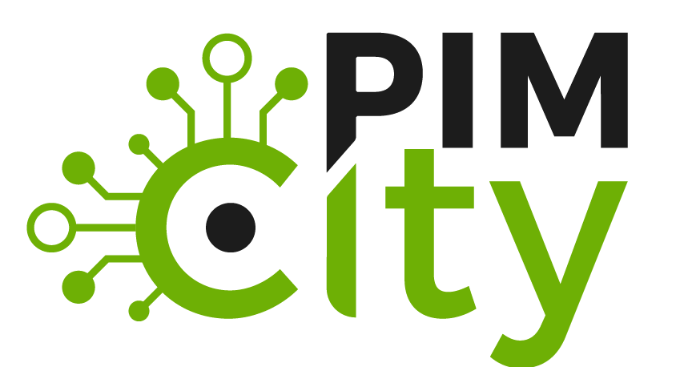

GenAI for Security
Advancing Generative AI methods for cybersecurity analysis, faster response loops, and high-quality analyst support.
Generative AI · Cybersecurity · Network Intelligence
I research Generative AI and build GenAI agent applications for cybersecurity, privacy, and network intelligence, combining rigorous measurement with deployable systems.
Research & innovation leader at NEC Laboratories Europe
Focus
Based in
Europe · Open to collaboration
Profile
I lead research and innovation at NEC Laboratories Europe with a strong focus on Generative AI. I currently serve as Manager of the Intelligent Software Applications Research Group and as Program Manager for Cybersecurity. My work includes designing and developing GenAI agent applications for security operations, threat intelligence workflows, and privacy-aware decision support.
I combine this GenAI focus with a background in cybersecurity, online privacy, and internet-scale network measurements. I hold an MSc (2011) and PhD (2014) in Telematic Engineering from Universidad Carlos III de Madrid and Universitat Politècnica de Catalunya.
At a glance
Role
Manager, Intelligent Software Applications Research Group · Program Manager for Cybersecurity
Lab
NEC Laboratories Europe
Degrees
MSc 2011 · PhD 2014
Focus
GenAI agents for security and privacy
Research agenda
Three intersecting pillars that shape my current work, with GenAI at the core.
Advancing Generative AI methods for cybersecurity analysis, faster response loops, and high-quality analyst support.
Building agentic AI applications that orchestrate tools and data to automate CTI enrichment, triage, and operational decision workflows.
Measuring privacy leakage at scale and monitoring infrastructure to reveal systemic risks, emerging attack surfaces, and network evolution.
Selected work
A rotating sample of publications across security, privacy, networking, and data systems. Hover a card for a short synopsis and key themes.
European collaboration
Highlighted projects that demonstrate measurable impact, cross‑disciplinary collaboration, and real‑world deployment.

H2020 project building next‑generation personal data platforms and the EasyPIMS demonstrator.
Project site
Horizon Europe project on AI‑enhanced secure 6G services, privacy, and trusted sensing.
Project siteML‑based management of 5G and beyond networks with security and elastic infrastructure focus.
Project fact sheetGDPR compliance tools and cloud platform for micro‑enterprises.
Project siteSecure hardware and software for trustworthy AI systems across their lifecycle.
Project siteConnect
Open to collaborations, joint proposals, and research exchanges.